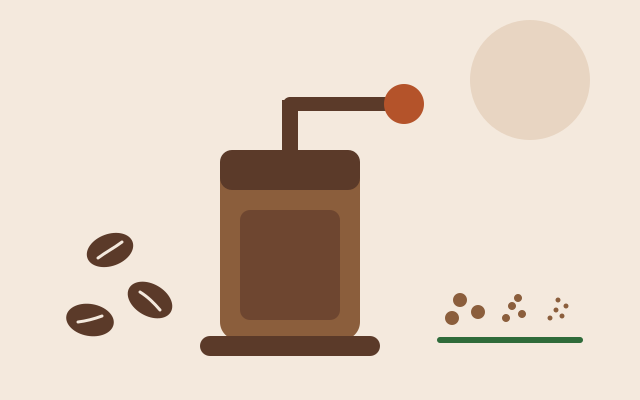

1. Elegir y moler el grano

- 5 min
- Nivel básico
Compra el café en grano y muélelo justo antes de prepararlo: así conserva sus aromas. Usa molienda gruesa para prensa y cold brew, media para filtro y fina para moka.
Paso a paso
- Revisa la fecha de tueste: lo ideal es usarlo dentro del primer mes.
- Pesa el café: unos 15 g por taza de 250 ml.
- Ajusta el molino al método y muele solo lo que vas a usar.